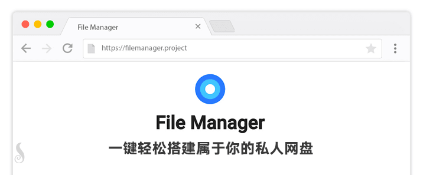

今天在评论里看到一个逗比 @kurokutomoko 告诉我，Caddy有一个 FileBrowser扩展，可以非常简单的部署一个私人网盘或者在线文件管理工具，我试了试的确很简单很好用，所以写一个简单教程。

Caddy FileBrowser扩展介绍
FileBrowser 是基于Caddy 的扩展。它提供文件管理界面，可用于 上传/下载/删除/预览和重命名 等该目录中的文件。
- 支持 上传文件
- 支持 按类型 搜索文件
- 支持 批量压缩 文件下载
- 支持 多用户管理(权限可控)
- 支持 在网页执行 Linux命令
- 支持 创建 共享链接(限时/永久)
- 支持 在线编辑 各类文本文件
- 支持 在线浏览 图片/文本/视频等
- 支持 新建/重命名/移动/删除 文件和文件夹等
- 部署简单，几步完成，无需任何依赖环境
- 等等 ...
目前这个扩展已经支持中文， 简体中文语言文件 由本人支持制作！
Caddy 文档：https://caddyserver.com/docs/http.filemanager
Github 项目：https://github.com/filebrowser/filebrowser
前面的几篇教程，我都用到了Caddy，大家应该都能看出来Caddy的易用性，所以本篇教程也很简单，我会提供一些示例，不懂的也可以留言。
其他私人网盘教程：https://doub.io/all-one/#私有网盘 相关教程
注意：因为自从该扩展 v1.5.0 开始，就从 FileManager 改名为 FileBrowser 了，但是其作为 Caddy 扩展的使用代码没区别，所以我只修改了本文章里的部分名称，代码什么的都不变。
安装 Caddy
wget -N --no-check-certificate https://raw.githubusercontent.com/ToyoDAdoubiBackup/doubi/master/caddy_install.sh && chmod +x caddy_install.sh && bash caddy_install.sh install http.filemanager # 如果你要同时安装多个 Caddy 插件，那么请修改下面的命令格式为： # bash caddy_install.sh install http.filemanager,http.xxx,http.xxx # 英文半角逗号分隔多个插件名称 # 注意并不能单独安装一个扩展，所以如果你要新安装扩展，请执行上面的命令安装 Caddy 并加上你要安装的所有扩展的名称。
安装Caddy成功后，继续新建一个用于使用的虚拟主机文件夹，例如 file（可以自己改）：
mkdir /usr/local/caddy/www && mkdir /usr/local/caddy/www/file
配置 Caddy
首先，我们先讲一下，FileBrowser扩展各个参数。
filemanager [url] [scope] {
database path
}
- url 是要设置的网站URL。默认是
/(比如/doubi那么访问入口就是http://ip/doubi)。 - scope 是要浏览的服务器文件目录路径，可以使相对或绝对路径。默认是
./(服务器上面文件的绝对或相对路径)。 - database path 是 filemanager 的数据库路径（如果不写这个参数，则默认就是 /usr/local/caddy/filemanager.db）。
配置示例
以下示例中，虚拟主机文件夹皆为 /usr/local/caddy/www/file
示例域名皆为 toyoo.pw
IP HTTP
本示例是，绑定虚拟主机为IP（即通过IP访问），HTTP协议（80端口）。
域名 HTTP
本示例是，绑定虚拟主机为域名（即通过域名访问），HTTP协议（80端口）。
域名 HTTPS
本示例是，绑定虚拟主机为域名（即通过域名访问），HTTPS协议（443端口）。
域名 HTTP重定向 HTTPS(仅手动指定SSL证书和密匙)
本示例是，域名HTTP重定向为HTTPS。
当你是手动指定 SSL证书和密匙 来配置的话，Caddy只会监听 443端口(https)，并不会自动设置 80端口(http)的重定向，如果要做重定向的话，可以这样做：
当你已经配置完上面步骤后，那就需要启动Caddy了。
/etc/init.d/caddy start # 如果启动失败可以看Caddy日志： tail -f /tmp/caddy.log
FileBrowser 使用说明
配置并打开网站后，默认账号和密码都是 admin，可以登陆后修改。[Settings]
切换中文
进入后可以点击左边侧栏 [Settings] 进入设置页面，然后选择 [language - Chinese (Simplified)] ，并点击右下角第一个 [Update] 按钮更新。
使用技巧
一些按键有对应的作用：
- F1 - 查看帮助
- F2 - 重命名 文件/文件夹
- DEL - 删除所选 文件/文件夹
- ESC - 清除当前选择 或 关闭提示
- CTRL + S - 保存下载 文件/文件夹（zip压缩）
- CTRL + 鼠标左键 单击 - 选择多个文件/文件夹
- 鼠标左键 双击 - 打开文件/文件夹
- 鼠标左键 单击 - 选择文件/文件夹
Caddy 使用说明
启动：/etc/init.d/caddy start
停止：/etc/init.d/caddy stop
重启：/etc/init.d/caddy restart
查看状态：/etc/init.d/caddy status
查看Caddy启动日志： tail -f /tmp/caddy.log
Caddy配置文件位置：/usr/local/caddy/Caddyfile
FileBrowser数据库位置：/usr/local/caddy/filemanager.db
Caddy自动申请SSL证书位置：/.caddy/acme/acme-v02.api.letsencrypt.org/sites/xxx.xxx(域名)/
升级FileBrowser
因为FileBrowser是Caddy的扩展，是融合成一个文件的，升级FileBrowser=升级Caddy（加扩展），所以只需要重新执行下面的命令覆盖安装Caddy即可（只会覆盖 Caddy自身，不影响配置文件），覆盖安装后启动Caddy即可（ /etc/init.d/caddy start ）。
wget -N --no-check-certificate https://raw.githubusercontent.com/ToyoDAdoubiBackup/doubi/master/caddy_install.sh && chmod +x caddy_install.sh && bash caddy_install.sh install http.filemanager
卸载
只需要把安装命令 install 改成 uninstall 就是卸载了，因为扩展是集成于Caddy中的，所以无法单独卸载某个扩展。
wget -N --no-check-certificate https://raw.githubusercontent.com/ToyoDAdoubiBackup/doubi/master/caddy_install.sh && chmod +x caddy_install.sh && bash caddy_install.sh uninstall
其他说明
启动显示成功，但是实际未运行
因为 服务脚本判断的问题，只判断了nohub是否运行 Caddy成功，但没有判断 Caddy 是否保持正常运行。
你可以理解为，nohub成功启动了 Caddy，但是 Caddy因为配置文件错误等原因，启动后又退出了。
所以这种情况下，你应该去查看启动日志：
tail -f /tmp/caddy.log
单网站/多网站
当然，上面的几个示例，实际上都算是单网站。
Caddy下载文件频繁中断
可能是因为 Caddy的超时时间机制导致的，可以在配置文件中加入这句代 码timeouts none ，例如这样：
Caddy启动失败，打开 http://ip 显示的是 It works !
一些系统会自带 apache2 ，而 apache2 会占用80端口，导致Caddy无法绑定端口，所以只要关掉就好了。
如果你是 Aria2 教程里过来的，那么请看这个示例和说明
使用这个扩展的时候，请先确定你的caddy安装了这个扩展(2017/03/23 17:50 以前通过我网站其他教程安装的皆没有)，否则请卸载重装！
启动 Caddy后，无法访问
FileBrowser账号密码忘了或想要重置账号信息
FileBrowser没有找回密码功能，所以一旦你忘记了密码，那么GG，不过没事 有办法重置。
其他私人网盘教程：https://doub.io/all-one/#私有网盘 相关教程
转载请超链接注明：逗比根据地 » 利用 Caddy FileBrowser扩展 非常简单的部署 私人网盘/在线文件管理器
责任声明：本站一切资源仅用作交流学习，请勿用作商业或违法行为！如造成任何后果，本站概不负责！


而且目前 filebrowser 功能已经完善，不怎么更新了，不像以前老是扩展版本更新慢于独立版，所以我也放弃了写独立版的打算了。
2. 请确保是最新版本的 filemanager 插件 v1.7.0（不清楚就重装Caddy+插件），我的 v1.7.0 没有这种问题，如果你是最新版本，那么你可能需要 Github 联系作者反馈。
隐藏目录的话，在新建用户或者修改用户信息处可以设置 该用户能看到什么，不能看到什么。
# 改成这样看看，但是需要配置的有 root /xxx/xxx 。 filemanager { database /usr/local/caddy/filemanager.db }filemanager 不是命令，是Caddy 的一个插件，要使用它需要按照我的教程示例去配置 Caddy 才行。
在独立版更新后，不出意外，作者会把 新版本制作成Caddy插件的方式去 Caddy 提交更新插件文件，然后你用本文章的安装方式才会得到最新版本的 filemanager。
如果你只想要即刻体验 filemanager 最新版本，那么请自行安装 独立版（安装方法见filemanager官网，Github有写官网地址）。
不管 HTML5的视频播放控件 并不支持分段缓存，所以如果你拉到最后，那么他也是慢慢缓存，直到缓存到 你拉到最后的进度条处 才会继续播放。
支持中文并不是很麻烦的事情，因为国际编码早就订好了，只要支持 UTF-8格式编码，就支持全世界绝大部分语言。
而且最重要的是， mp4 等视频格式在线播放并不是由 filemanager 实现的，而是靠浏览器的HTML5实现的，只要浏览器支持 HTML5，那么你在服务器上面无论用什么 HTTP Web服务中访问mp4文件，都会在线播放。
这也是为什么 你直接browse配置，也能在线播放的原因，你就是用 nginx apache 也一样，因为这些程序不会帮你在线播放mp4视频，而只是建立一个HTTP服务，让你可以在线访问该 mp4视频，然后浏览器的HTML5就会开始播放，这也是为什么无论什么方式，他们的视频播放控件（就是开始、暂停、进度条、全屏）都长一个样子的原因。
http://toyoo.ml:80 { root /usr/local/caddy/www/file timeouts none gzip filemanager / /usr/local/caddy/www/file { database /usr/local/caddy/filemanager.db } } http://toyoo.ml:81 { root /usr/local/caddy/www/aria2 timeouts none gzip }Caddy 是HTTP服务程序，支持多个虚拟主机的。压缩的文件应该是在 /tmp/ 这个临时文件夹里，但是我也不清楚具体文件夹。